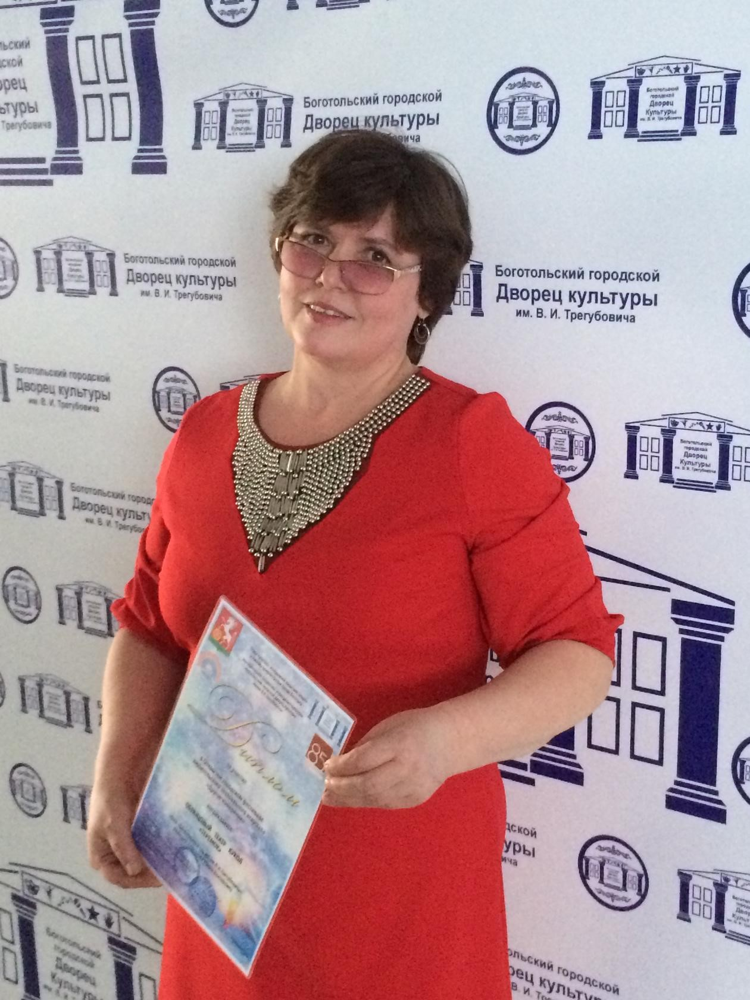
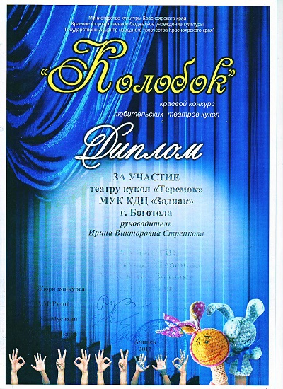
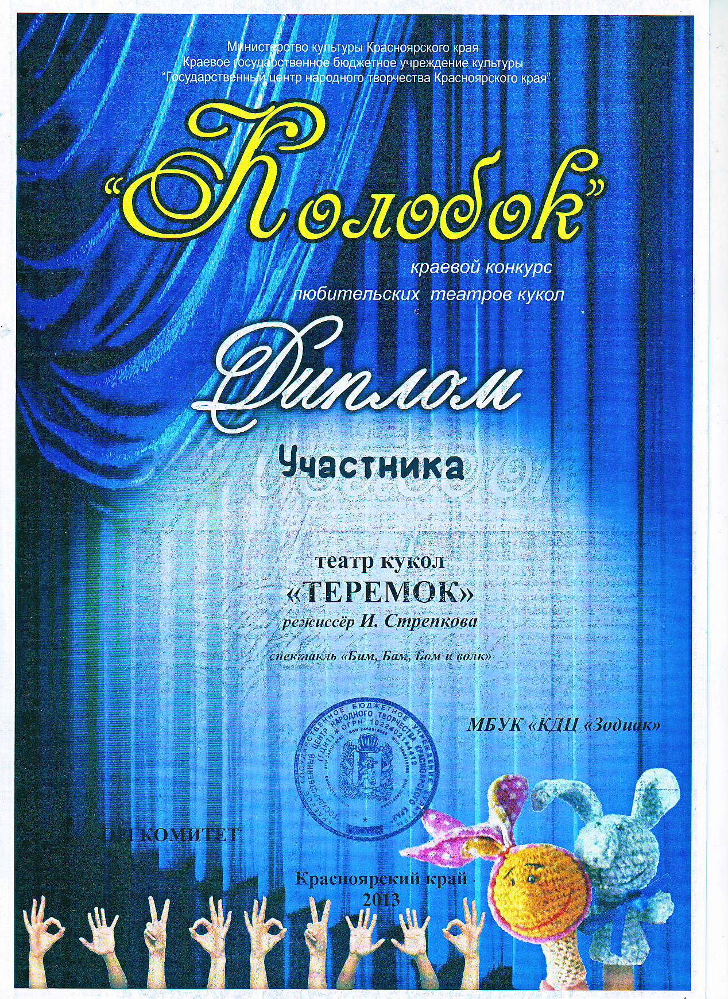
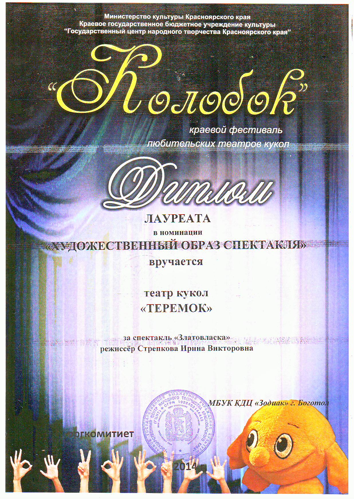
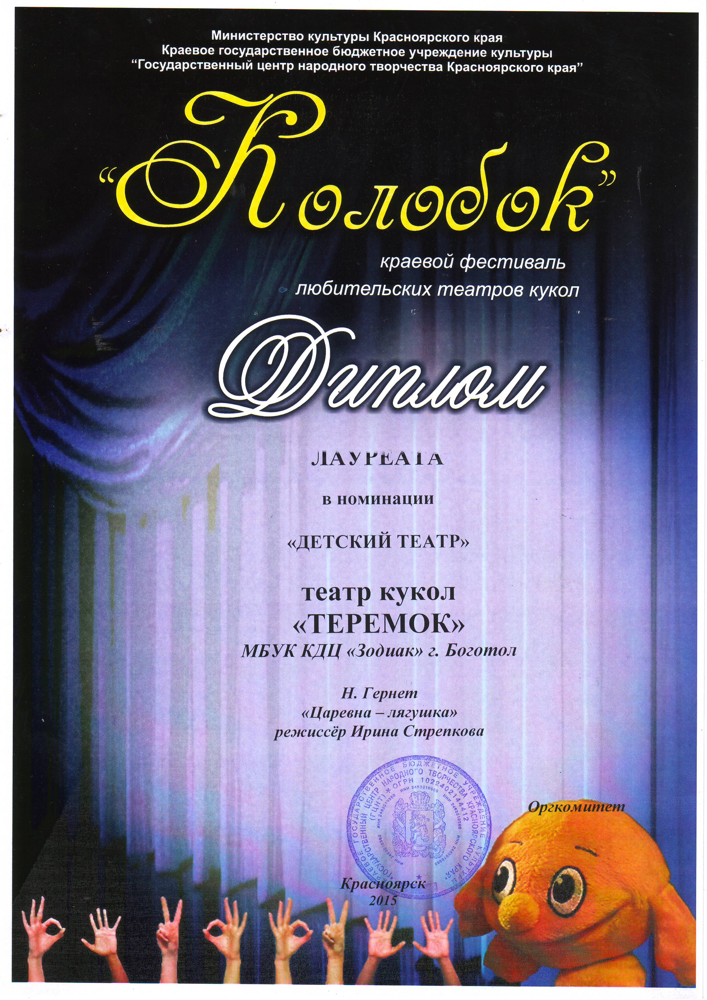
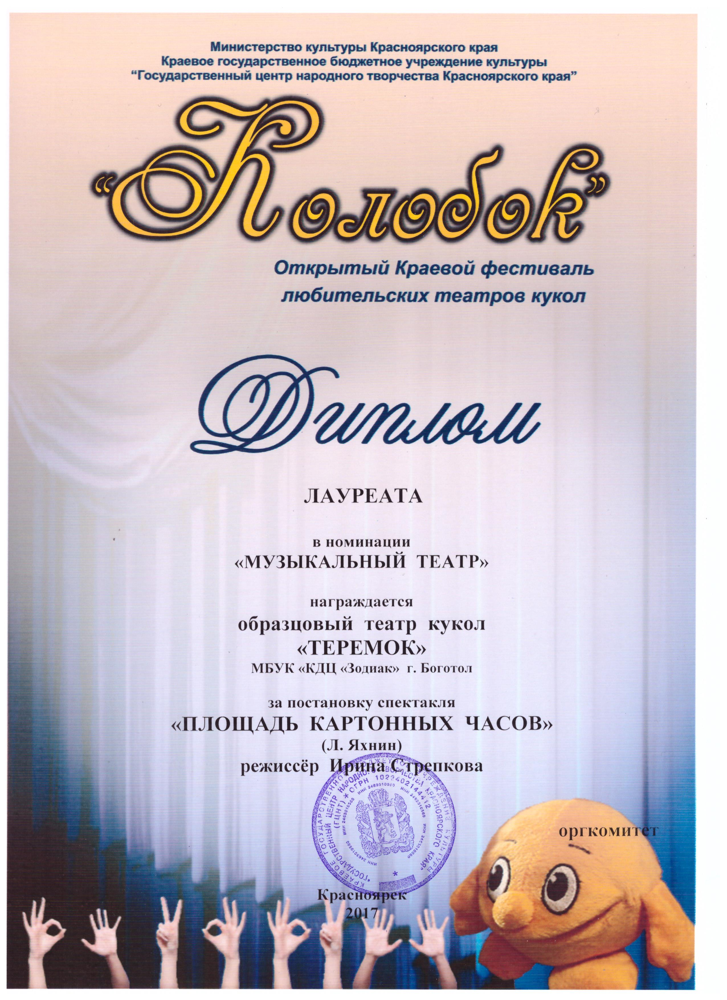

Режиссер театра - Стрепкова Ирина Викторовна
«Духовная жизнь ребенка полноценна лишь тогда,когда он живет в мире игры, сказки, музыки, фантазии, творчества. Без этого он засушенный цветок…»
В.А. Сухомлинский
Кукольный театр играет большую роль в формировании личности ребенка. Он доставляет много радости, привлекает своей яркостью, красочностью, динамикой, воздействует на зрителей. Он таит в себе большие возможности для их всестороннего развития. Кукольный театр располагает целым комплексом средств: художественные образы-персонажи, оформление, слово и музыка – все это вместе взятое, в силу образно-конкретного мышления ребёнка, помогает ребенку легче, ярче и правильнее понять содержание литературного произведения, влияет на развитие его художественного вкуса. Кукла, играющая на сцене, живет для ребенка не условно, она реальность, ожившая сказка. Эмоционально пережитый кукольный спектакль помогает определить отношение детей к происходящему, к действующим лицам и их поступкам, вызывает желание подражать положительным героям и быть непохожими на отрицательных. Кукольный театр – воспитатель маленьких сердец. Задачи Образцового театра кукол «Теремок»: - Воспитание творчески активной личности; - Развитие умений и навыков, творческих способностей, раскрытие новых способностей и талантов детей средствами театрального искусства; - Организация их досуга путём вовлечения в театральную деятельность. - Овладение теоретическими знаниями, практическими умениями и навыками в области театрального искусства; - Развитие творческих и актёрских способностей детей через совершенствование речевой культуры и овладение приёмами пластической выразительности с учётом индивидуальных возможностей каждого ребёнка; - Воспитание независимой, свободной личности; - Создание необходимой творческой атмосферы в коллективе: взаимопонимание, доверия, уважения друг к другу; - Участие в детских театральных фестивалях и конкурсах. Участники театра являются постоянными участниками городских, районных и краевых мероприятий.
Награды театра

Диплом за участие в Краевом конкурсе любительских театров кукол "Колобок" 2011 год

Диплом участника Краевого конкурса любительских театров кукол "Колобок" 2013 год

Диплом лауреата Краевого конкурса любительских театров кукол "Колобок" 2014 год

Диплом лауреата Краевого конкурса любительских театров кукол "Колобок" 2015 год

Диплом лауреата Краевого конкурса любительских театров кукол "Колобок" 2017 год

Диплом лауреата Краевого конкурса любительских театров кукол "Колобок" 2017 года Василенко Роману в номинации "Лучшая мужская роль живого плана"